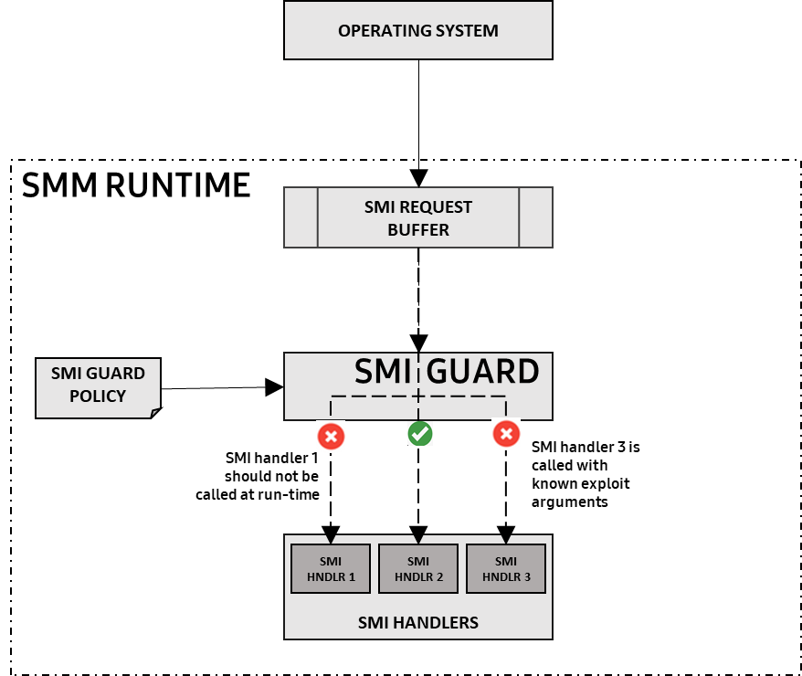
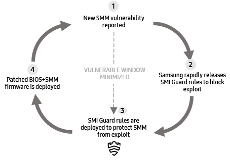
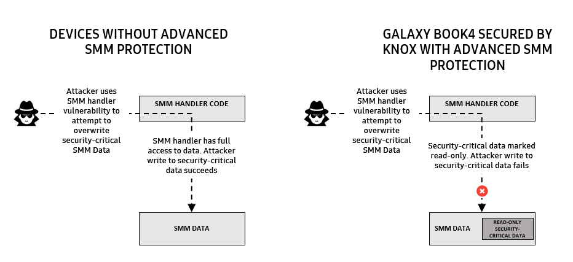

Protecting the SMM
Last updated August 12th, 2024
The UEFI and BIOS installs code that remains persistent through the system’s runtime in a mode called System Management Mode, or SMM, to maintain control of the system even after system boot. SMM code handles a variety of low-level, system-wide tasks such as power management, read and write of persistent BIOS variables and configuration, and also contains any OEM-specific code.
SMM is the highest privilege mode of the processor. Like the BIOS and UEFI, SMM code runs below the OS. SMM has full access to physical memory, SMM-specific memory called SMRAM, MSR special-purpose registers, the SPI flash region to read and write BIOS variables, and I/O operations. Furthermore, the SMM is designed to be invisible to lower privilege layers such as the OS kernel or hypervisor.
A compromise of the SMM has extremely high impact on security since the SMM is the highest privileged mode and is invisible to lower privileged layers. For example, an attacker that compromises the SMM can write to the SPI flash to persist stealthy malware code, disable BIOS variables such as Secure Boot, and change system configurations. Moreover, the attacker can completely conceal such activities from any OS or hypervisor detection techniques like antivirus and bypass mitigations.
How SMM exploitation works
Attackers typically escalate privileges to the SMM by exploiting vulnerabilities in the SMM code. The OS calls SMM code through system management interrupts, or SMI, and passes parameters to SMI handlers using a shared memory area called the SMM Communication Buffer.
If the attacker finds a vulnerability such as memory corruption in any of the SMI handlers, they can craft an input in the SMM Communication Buffer to exploit vulnerable code in the SMI handler. An attacker typically uses well-known exploitation techniques like Return-Oriented Programming, or ROP, to escalate to SMM privileges, disable SPI write protections, and persist malware.
The Knox platform introduces several features dedicated to detecting, hardening, and mitigating the effect of SMM exploits. These features are described below.
SMI Guard: Protecting SMI calls
The SMI Guard is a security routine that intercepts SMI calls and analyzes the content of the shared buffer to detect malicious inputs or known exploit patterns based on rules, as shown in Figure 3.
Once an attack is detected, remedial actions include blocking the SMM call from going through, and alerting an admin.
This feature enables IT admins to define the following rules to limit calls to the SMM at runtime:
| Rule | Description |
|---|---|
| Attack surface reduction | This type of rule blocks SMIs that are not required at run-time, including blocking SMI setup function calls and security-critical BIOS variable updates that legitimately happen only during system initialization at boot-time. |
| Exploit detection | This type of rule prevents attacks on specific SMI handler calls by detecting exploit patterns and comparing SMI call argument values against known-bad values. If a known-bad argument value is detected, SMI Guard can block such known-bad calls to the vulnerable SMI handler until a firmware patch is deployed. |
The exploit detection feature is used for rapid incident response against newly discovered SMM vulnerabilities until the enterprise deploys a fully patched BIOS version. Enterprises may intentionally delay BIOS updates for stability and compliance purposes. In such scenarios, the SMI Guard minimizes the period of time a device is vulnerable by detecting and blocking exploit attempts on the firmware.

Figure 3: SMI Guard blocks SMI calls that shouldn’t be called at run-time and SMI calls with known-bad arguments indicative of exploits.
The typical rapid incident response flow is described as follows in Figure 4:
- A new SMM vulnerability is reported (Step 1).
- If the vulnerability affects a Galaxy Book, and can be blocked by SMI Guard, Samsung rapidly releases SMI Guard rules to block exploitation on vulnerable firmware versions (Step 2).
- SMI Guard rules are deployed along with a notification (Step 3). The Galaxy Book is now protected from attempts to exploit the vulnerability.
- Finally, when an updated BIOS firmware version that fixes the vulnerability is deployed, the SMI Guard rule is automatically disabled.

Figure 4: SMI Guard enables rapid incident response and minimizes the window of vulnerability.
Advanced SMM Protection
This feature adds a layer of exploit mitigation to protect SMM even in the face of previously unknown vulnerabilities and zero-day attacks.
While chip firmware manufacturers and BIOS vendors take special efforts to ensure that SMM code has no vulnerabilities, given the significant volume of SMM code, attackers are sometimes able to discover previously unknown vulnerabilities — also called “zero days” vulnerabilities. Advanced SMM Protection aims to block the attacker from taking advantage of such these previously unknown vulnerabilities.
Leveraging existing SMM exploit mitigations
Samsung BIOSes have basic exploit mitigations, such as stack cookies, compiled into them. In addition, Intel introduced two security features aimed at making the SMM runtime environment more resilient to attackers, namely Intel Runtime BIOS Resilience and Intel System Resources Defense, both of which are enabled on Samsung PCs.
The goal of these features is to make it more difficult for an attacker with access to a zero-day to perform anything useful, such as leaking SMM memory or modifying the privileged processor state.
Intel Runtime BIOS Resilience protects page tables by locking them so they can’t be modified later, and enables strong defense mechanisms such as read-only code sections and non-executable data sections.
Intel System Resources Defense further locks down the SMM runtime environment by running SMI handlers at ring 3, which is a lower privilege, instead of ring 0, which is a higher privilege. By forcing all SMI handlers to run at a lower privilege, any attempts to access hardware such as MMIO or MSRs by an SMI handler will trigger a fault and transfer control to a trusted ring-0 component within SMM called the Policy-shim.
The Policy-shim has the power to allow and disallow any resource access, allowing OEMs like Samsung to tightly control which system resources the SMI handlers can access. This makes it much more difficult for a potential attacker to force one of our SMI handlers to perform a malicious action and further compromise the platform.
Introducing novel mitigations
While the above mitigations significantly reduce the attack surface and impact of an SMM exploit, they all focus on protecting code but not data. Security-critical data structures in SMM are still vulnerable to unauthorized write attempts that can be leveraged by an attacker. For example, one such data structure describes non-SMM memory regions, which could be modified by an exploit to disclose or modify SMM memory.
Advanced SMM Protection provides additional exploit mitigation by marking security-critical SMM data as read-only, making it impossible for an attacker to overwrite or modify. This is seen in Figure 5.

Figure 5: Advanced SMM Protection mitigates zero-day SMM vulnerabilities by blocking writes to security-critical data.
On this page
Is this page helpful?